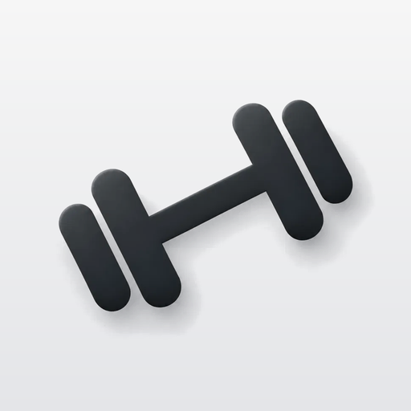
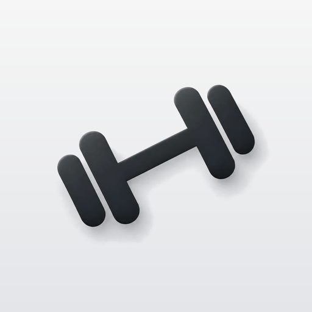

Одна на все темы. Пересобрать: npm run icons (исходник design/icon-source.png).
Файлы — полный квадрат без прозрачности; скругление здесь нарисовано масками, как это делает система.
Светлый фон — маска iOS (скругление 22,37%)
1024 (показана в 512)180 · apple-touch-icon12060
Тёмный фон — маска iOS
1024 (показана в 512)18012060
Обои — маска iOS и маска-круг
180 · iOS60 · iOS

180 · круг (icon-512)60 · круг
Maskable (Android): безопасная зона — круг 80%

весь файл, пунктир — круг 80%180 · самая тесная маска (круг 80%)180 · круг по всему файлу180 · скруглённый квадрат60